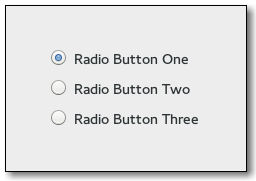

Gtk.RadioButton
Example
Methods
| static | new(group) |
| static | new_from_widget(radio_group_member) |
| static | new_with_label(group, label) |
| static | new_with_label_from_widget(radio_group_member, label) |
| static | new_with_mnemonic(group, label) |
| static | new_with_mnemonic_from_widget(radio_group_member, label) |
| get_group() | |
| join_group(group_source) | |
| set_group(group) |
Virtual Methods
| Inherited: | Gtk.CheckButton (1), Gtk.ToggleButton (1), Gtk.Button (6), Gtk.Container (10), Gtk.Widget (82), GObject.Object (7), Gtk.Buildable (10), Gtk.Actionable (4), Gtk.Activatable (2) |
|---|
| do_group_changed() |
Properties
| Inherited: | Gtk.ToggleButton (3), Gtk.Button (10), Gtk.Container (3), Gtk.Widget (38), Gtk.Actionable (2), Gtk.Activatable (2) |
|---|
| Name | Type | Flags | Short Description |
|---|---|---|---|
| group | Gtk.RadioButton | w | The radio button whose group this widget belongs to. |
Style Properties
| Inherited: | Gtk.CheckButton (2), Gtk.Button (7), Gtk.Widget (17) |
|---|
Signals
| Inherited: | Gtk.ToggleButton (1), Gtk.Button (6), Gtk.Container (4), Gtk.Widget (69), GObject.Object (1) |
|---|
| Name | Short Description |
|---|---|
| group-changed | Emitted when the group of radio buttons that a radio button belongs to changes. |
Fields
| Inherited: | Gtk.CheckButton (1), Gtk.ToggleButton (1), Gtk.Button (1), Gtk.Bin (1), Gtk.Container (1), Gtk.Widget (1), GObject.InitiallyUnowned (3), GObject.Object (3) |
|---|
| Name | Type | Access | Description |
|---|---|---|---|
| check_button | Gtk.CheckButton | r |
Class Details
- class Gtk.RadioButton(label=None, stock=None, use_stock=False, use_underline=False, **kwds)
Bases: Gtk.CheckButton
A single radio button performs the same basic function as a Gtk.CheckButton, as its position in the object hierarchy reflects. It is only when multiple radio buttons are grouped together that they become a different user interface component in their own right.
Every radio button is a member of some group of radio buttons. When one is selected, all other radio buttons in the same group are deselected. A Gtk.RadioButton is one way of giving the user a choice from many options.
Radio button widgets are created with Gtk.RadioButton.new (), passing None as the argument if this is the first radio button in a group. In subsequent calls, the group you wish to add this button to should be passed as an argument. Optionally, Gtk.RadioButton.new_with_label () can be used if you want a text label on the radio button.
Alternatively, when adding widgets to an existing group of radio buttons, use Gtk.RadioButton.new_from_widget () with a Gtk.RadioButton that already has a group assigned to it. The convenience function Gtk.RadioButton.new_with_label_from_widget () is also provided.
To retrieve the group a Gtk.RadioButton is assigned to, use Gtk.RadioButton.get_group ().
To remove a Gtk.RadioButton from one group and make it part of a new one, use Gtk.RadioButton.set_group ().
The group list does not need to be freed, as each Gtk.RadioButton will remove itself and its list item when it is destroyed.
## How to create a group of two radio buttons.
<!-- language="C" --> void create_radio_buttons (void) { GtkWidget *window, *radio1, *radio2, *box, *entry; window = gtk_window_new (GTK_WINDOW_TOPLEVEL); box = gtk_box_new (GTK_ORIENTATION_VERTICAL, 2); gtk_box_set_homogeneous (GTK_BOX (box), TRUE); // Create a radio button with a GtkEntry widget radio1 = gtk_radio_button_new (NULL); entry = gtk_entry_new (); gtk_container_add (GTK_CONTAINER (radio1), entry); // Create a radio button with a label radio2 = gtk_radio_button_new_with_label_from_widget (GTK_RADIO_BUTTON (radio1), "I’m the second radio button."); // Pack them into a box, then show all the widgets gtk_box_pack_start (GTK_BOX (box), radio1, TRUE, TRUE, 2); gtk_box_pack_start (GTK_BOX (box), radio2, TRUE, TRUE, 2); gtk_container_add (GTK_CONTAINER (window), box); gtk_widget_show_all (window); return; }
When an unselected button in the group is clicked the clicked button receives the Gtk.ToggleButton ::toggled signal, as does the previously selected button. Inside the Gtk.ToggleButton ::toggled handler, Gtk.ToggleButton.get_active () can be used to determine if the button has been selected or deselected.
- static new(group)
Parameters: group ([Gtk.RadioButton] or None) – an existing radio button group, or None if you are creating a new group. Returns: a new radio button Return type: Gtk.Widget Creates a new Gtk.RadioButton. To be of any practical value, a widget should then be packed into the radio button.
- static new_from_widget(radio_group_member)
Parameters: radio_group_member (Gtk.RadioButton or None) – an existing Gtk.RadioButton. Returns: a new radio button. Return type: Gtk.Widget Creates a new Gtk.RadioButton, adding it to the same group as radio_group_member. As with Gtk.RadioButton.new (), a widget should be packed into the radio button.
- static new_with_label(group, label)
Parameters: - group ([Gtk.RadioButton] or None) – an existing radio button group, or None if you are creating a new group.
- label (str) – the text label to display next to the radio button.
Returns: a new radio button.
Return type: Creates a new Gtk.RadioButton with a text label.
- static new_with_label_from_widget(radio_group_member, label)
Parameters: - radio_group_member (Gtk.RadioButton or None) – widget to get radio group from or None
- label (str) – a text string to display next to the radio button.
Returns: a new radio button.
Return type: Creates a new Gtk.RadioButton with a text label, adding it to the same group as radio_group_member.
- static new_with_mnemonic(group, label)
Parameters: - group ([Gtk.RadioButton] or None) – the radio button group, or None
- label (str) – the text of the button, with an underscore in front of the mnemonic character
Returns: a new Gtk.RadioButton
Return type: Creates a new Gtk.RadioButton containing a label, adding it to the same group as group. The label will be created using Gtk.Label.new_with_mnemonic (), so underscores in label indicate the mnemonic for the button.
- static new_with_mnemonic_from_widget(radio_group_member, label)
Parameters: - radio_group_member (Gtk.RadioButton or None) – widget to get radio group from or None
- label (str) – the text of the button, with an underscore in front of the mnemonic character
Returns: a new Gtk.RadioButton
Return type: Creates a new Gtk.RadioButton containing a label. The label will be created using Gtk.Label.new_with_mnemonic (), so underscores in label indicate the mnemonic for the button.
- get_group()
Returns: a linked list containing all the radio buttons in the same group as radio_button. The returned list is owned by the radio button and must not be modified or freed. Return type: [Gtk.RadioButton] Retrieves the group assigned to a radio button.
- join_group(group_source)
Parameters: group_source (Gtk.RadioButton or None) – a radio button object whos group we are joining, or None to remove the radio button from its group Joins a Gtk.RadioButton object to the group of another Gtk.RadioButton object
Use this in language bindings instead of the Gtk.RadioButton.get_group () and Gtk.RadioButton.set_group () methods
A common way to set up a group of radio buttons is the following:
<!-- language="C" --> GtkRadioButton *radio_button; GtkRadioButton *last_button; while ( ...more buttons to add... ) { radio_button = gtk_radio_button_new (...); gtk_radio_button_join_group (radio_button, last_button); last_button = radio_button; }
New in version 3.0.
- set_group(group)
Parameters: group ([Gtk.RadioButton] or None) – an existing radio button group, such as one returned from Gtk.RadioButton.get_group (), or None. Sets a Gtk.RadioButton ’s group. It should be noted that this does not change the layout of your interface in any way, so if you are changing the group, it is likely you will need to re-arrange the user interface to reflect these changes.
- do_group_changed()
Type: virtual
Signal Details
- Gtk.RadioButton.signals.group_changed(radio_button)
Signal Name: group-changed Flags: RUN_FIRST Parameters: radio_button (Gtk.RadioButton) – The object which received the signal Emitted when the group of radio buttons that a radio button belongs to changes. This is emitted when a radio button switches from being alone to being part of a group of 2 or more buttons, or vice-versa, and when a button is moved from one group of 2 or more buttons to a different one, but not when the composition of the group that a button belongs to changes.
New in version 2.4.
Property Details
- Gtk.RadioButton.props.group
Name: group Type: Gtk.RadioButton Default Value: None Flags: w Sets a new group for a radio button.